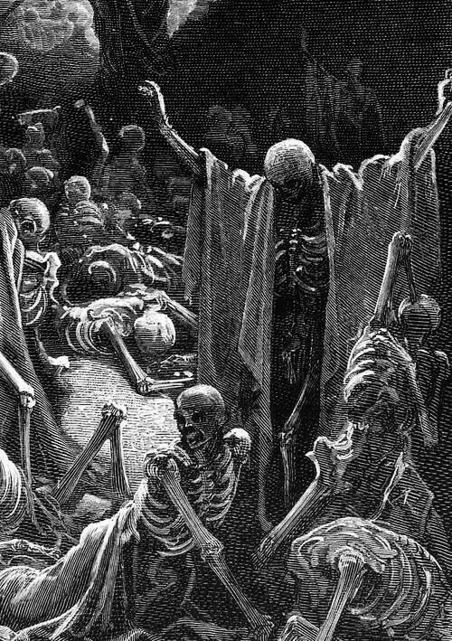
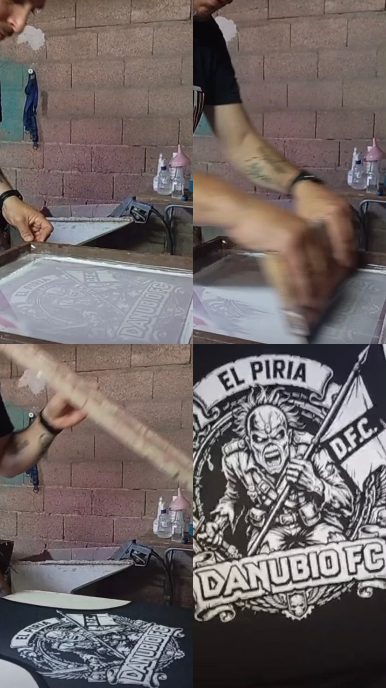

GOTHIC
Sombras, contrastes y referencias oscuras que transmiten fuerza, misterio y carácter.
No fabricamos en serie. Creamos piezas con identidad.
Thanatos nació hace más de dos años como un pequeño proyecto impulsado por la creatividad, la pasión por el arte y las ganas de hacer algo diferente.
Desde el comienzo, elegimos un camino propio: trabajar cada prenda de manera artesanal, combinando el estampado textil con la pintura a mano y técnicas profesionales.
Creemos que la ropa puede ser mucho más que una prenda. Puede expresar una idea, una actitud y una forma de ver el mundo. Por eso, detrás de cada pieza hay tiempo, dedicación y atención a los detalles.
Somos una empresa pequeña, pero tenemos grandes expectativas sobre lo que hacemos. Seguimos aprendiendo, experimentando y perfeccionando nuestro trabajo para ofrecer productos con personalidad y calidad.
Cada pieza lleva algo que una producción en serie no puede replicar: el trabajo de nuestras manos.
Cada diseño se trabaja con dedicación, cuidado y atención al detalle.
Aplicamos pintura textil y técnicas de estampado con un enfoque profesional.
Creamos prendas con carácter para quienes buscan algo diferente y auténtico.
Thanatos nació de una inquietud: crear algo distinto. En un mundo donde gran parte de la moda parece seguir las mismas tendencias, quisimos construir una identidad propia, con una estética que tuviera algo para decir.
Nos inspiramos en la oscuridad del gótico, la nostalgia de otras épocas y la rebeldía de la cultura alternativa. Queríamos recuperar esa esencia retro y llevarla a prendas que pudieran sentirse actuales, auténticas y diferentes.
Así comenzó el camino de Thanatos: con la intención de construir desde Uruguay una marca con personalidad, alejada de lo convencional y fiel a su propia visión.

DARK AESTHETIC / RETRO INFLUENCELo gótico no es solamente una estética. Es una forma de mirar las cosas desde otra perspectiva.
Sombras, contrastes y referencias oscuras que transmiten fuerza, misterio y carácter.
Inspiración de otras épocas, gráficos con personalidad y una mirada nostálgica que nunca pasa desapercibida.
Una identidad que no busca encajar en todo, sino conectar con quienes se identifican con ella.

Cada prenda representa una parte de lo que somos. Trabajamos con estampado y pintura textil artesanal, dedicando tiempo a los detalles y cuidando cada etapa del proceso.
Detrás del resultado hay pruebas, decisiones, técnica y aprendizaje constante. Utilizamos materiales y procedimientos de nivel profesional, sin perder aquello que nos diferencia: la intervención manual.
Para nosotros, hacer algo artesanal no significa conformarse con menos. Significa involucrarse más, prestar atención y buscar que cada diseño tenga la fuerza que imaginamos desde el principio.
Se trata de encontrar aquello que te representa, vestirlo y hacerlo parte de vos.
THANATOS
UNA IDENTIDAD PROPIA. UNA HISTORIA EN CONSTRUCCIÓN.